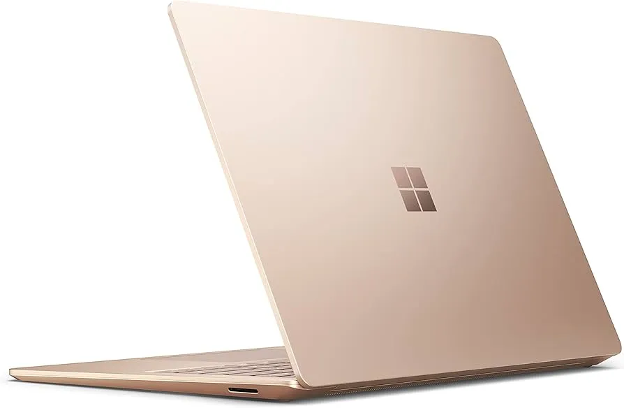
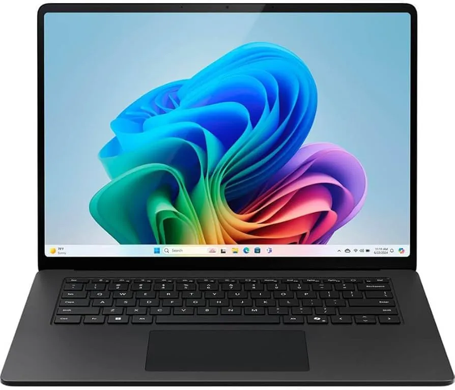
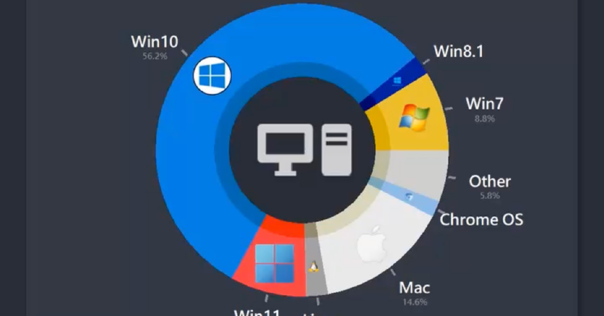

Windows: Works on a wide range of devices.
Unlike Mac, which only runs on Apple computers, Windows is used by dozens of manufacturers—like Dell, HP, Lenovo, and ASUS. This means there’s a huge variety of options in terms of price, performance, size, and features. Whether you need a budget laptop for school or a high-powered desktop for gaming or engineering, there's a Windows machine built for your exact needs. This flexibility makes Windows the go-to choice for businesses, gamers, and users who want more control over their setup.
Windows: Greater software compatibility.
Windows is the most widely used operating system, which means it's compatible with a broader range of software, especially for specialized or legacy programs. Many industries rely on Windows-exclusive applications, from gaming to engineering tools and business software. Whether it’s custom software for a specific job or accessing a wide library of third-party apps, Windows offers more flexibility when it comes to available software options, making it a top choice for users with specialized needs.
Windows: Better for gaming.
Windows dominates the gaming world thanks to broad hardware support, compatibility with the latest graphics cards, and access to a huge library of games, including many titles not available on Mac. Features like DirectX 12 optimize game performance, and most major game developers prioritize Windows releases. For gamers who want high frame rates, customizable builds, and VR or cutting-edge graphics, Windows is the clear winner.
Interesting Fact: Windows is the most widely used desktop OS in the world.
As of recent years, Windows holds over 70% of the global desktop operating system market share. This massive user base means it’s the primary target for software developers, businesses, and even hackers. While this brings huge advantages in terms of software availability and community support, it also means Windows faces more security threats—pushing Microsoft to constantly improve its security features and updates.
